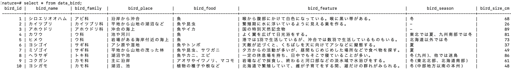
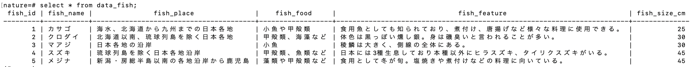
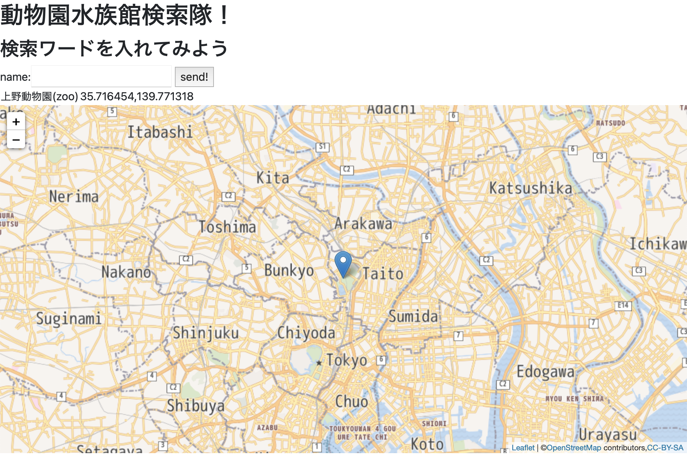
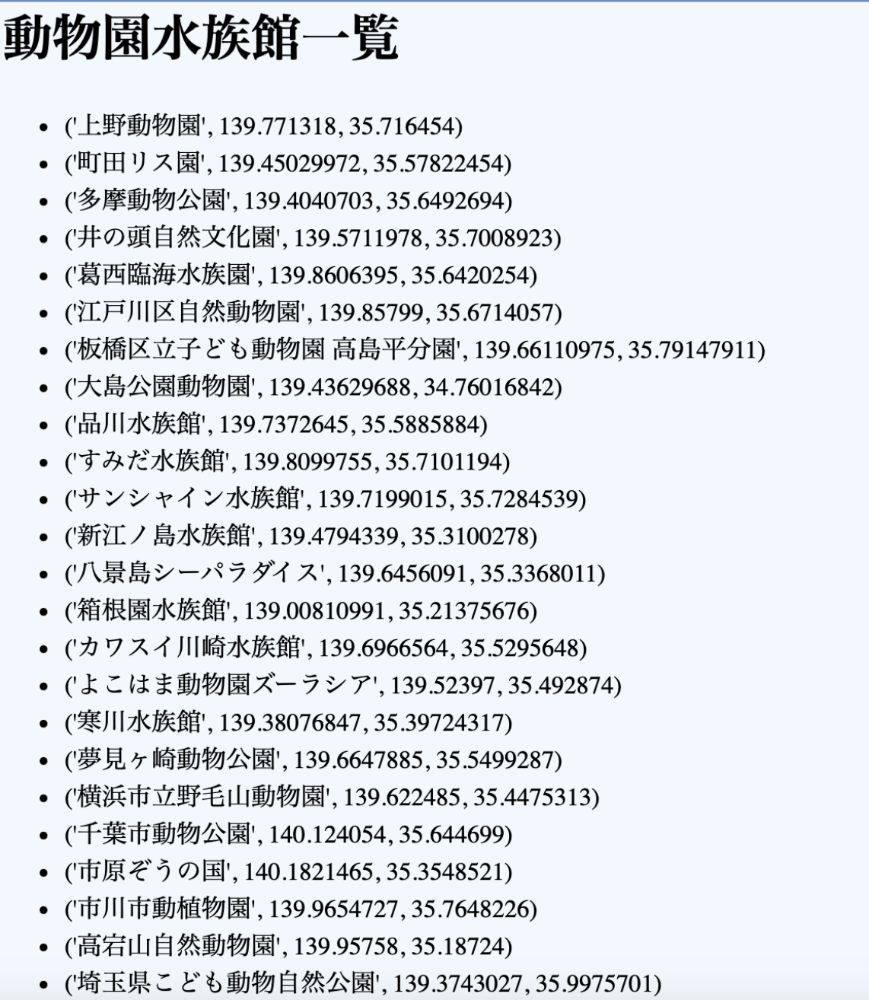
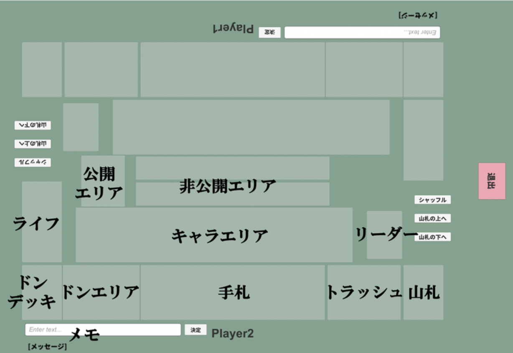

プロフィール
氏名
日根 剛
大学名・学部名
武蔵野大学・データサイエンス学部
所属研究室
圓崎PJ
スキル
興味
製作物
猫の成長記録
使用したもの・技術・工夫したところ・改善点
- Processing
- Python
- 初めはマウスを動かすことで写真を変更できるようにしていたのですが、扱いやすくするために日付をクリックすることで写真を変更できるように工夫しました。
生物のデータベース作成
使用したもの・技術・工夫したところ・改善点
- PostgreSQL
- 検索機能や順番を入れ替える機能を入れられていないので、改善しようと思います。


指スマゲームを作成
使用したもの・技術・工夫したところ・改善点
- GoogleColaboratoly
- Python
- 初めて遊ぶ人にも分かりやすくなるよう、説明や指の残り本数などを入れました。
指スマゲームへのリンク
動物園・水族館検索サイト
使用したもの・技術・工夫したところ・改善点
- PHP
- PostgreSQL
- 大学の授業にて関東内の動物園と水族館の場所を調べることができるサイトを作成しました。一部検索で表示されない動物園水族館もあります。
動物園水族館検索サイトへ

検索で表示される動物園水族館の一覧(一部)になります。

自動3Dモデル作成システム(仮名)(現在作成中)
使用したもの・技術・工夫したところ・改善点
- Unity
- Python
- 動物の画像を1枚入れることでその動物の3Dモデルが作成されるものを現在作成しています。完成した際には画像でしか残されていない絶滅動物を3Dで見れるようにしたいと考えています。
カードゲームシミュレーター
こちらから実行動画を見ることができます。
以下は動画に登場する盤面です。

動画では以下のことをしています。
- 対戦相手とマッチングする。
- カードを様々なエリアへ移動させる。
- 手札のカードを山札に戻してシャッフルする。
- キャラの効果で山札の上から5枚見る。(山札から非公開エリアへ移動)
- ゲームを終了する。
使用したもの・技術・工夫したところ・改善点
- Unity
- C#
- Photon
- 実際の対戦に近づけるため、「手札は相手から見えない」「シャッフルができる」「player1とplayer2で視点が変わる」などしています。
※カードゲームシミュレーターは他では公開していません。そのため、プレイすることはできません。
※画像引用元ワンピースカードゲーム公式サイト
詳しいシャッフルの動画はこちらになります。
「山札の上へ」のボタンで山札の一番下にあるカードを一番上に置いています。「山札の下へ」のボタンで山札の一番上にあるカードを一番下に置いています。
githubページ